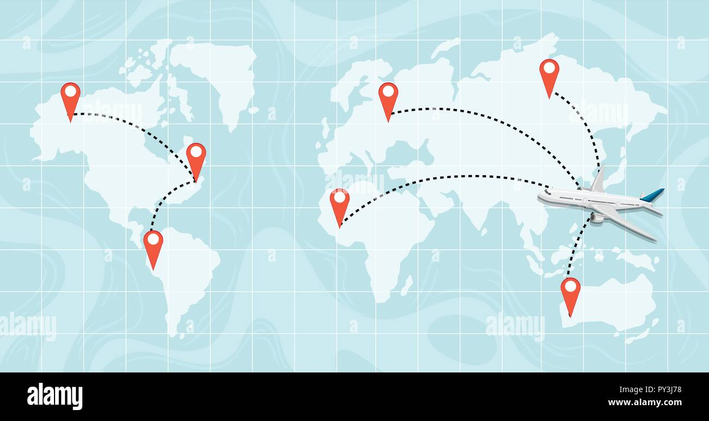

{% include 'header.html'%}
<!-- Hero Start -->

<div class="container-fluid bg-light py-6 my-6 mt-0">
    <div class="container-fluid position-relative" style="min-height: 400px;">
        
        <div class="row g-5 align-items-center justify-content-center position-absolute top-50 start-50 translate-middle"
            style="z-index: 2; width: 100%;">
            <div class="col-lg-7 col-md-12 mx-auto text-center py-5">
                <h1 class="display-1 mb-4 animated bounceInDown">Destinations</h1>
                <ol class="breadcrumb justify-content-center mb-0 animated bounceInDown">
                    <li class="breadcrumb-item ">Map For all Places you can go</li>
                </ol>
            </div>
        </div>
    </div>
</div>
<!-- Hero End -->


<!-- Destinations Map Start -->
<div class="container-fluid blog py-6">
    <div class="container">
        <div class="text-center wow bounceInUp" data-wow-delay="0.1s">
            <small
                class="d-inline-block fw-bold text-dark text-uppercase bg-light border border-primary rounded-pill px-4 py-1 mb-3">Our
                Destinations around the world</small>
        </div>
<div class="destinations-map-wrapper">
    
    <!-- Pins with improved positions and size -->
    <!-- United States -->
    <a href="/us" class="map-pin" style="left: 17.5%; top: 25%;">
        <div class="map-pin-icon">US</div>
        <div class="map-pin-tail"></div>
        <div class="map-pin-tooltip">United States</div>
    </a>
    <!-- Saudi Arabia -->
    <a href="/ksa" class="map-pin" style="left: 58.5%; top: 33%;">
        <div class="map-pin-icon">KSA</div>
        <div class="map-pin-tail"></div>
        <div class="map-pin-tooltip">Saudi Arabia</div>
    </a>
    <!-- SPAIN -->
    <a href="/spain" class="map-pin" style="left: 44.5%; top: 27%;">
        <div class="map-pin-icon">SP</div>
        <div class="map-pin-tail"></div>
        <div class="map-pin-tooltip">SPAIN</div>
    </a>
    <!-- NETHERLANDS -->
    <a href="/netherlands" class="map-pin" style="left: 47.5%; top: 18%;">
        <div class="map-pin-icon">NL</div>
        <div class="map-pin-tail"></div>
        <div class="map-pin-tooltip">NETHERLANDS</div>
    </a>
    <!-- TURKEY -->
    <a href="/turkey" class="map-pin" style="left: 55%; top: 26%;">
        <div class="map-pin-icon">TR</div>
        <div class="map-pin-tail"></div>
        <div class="map-pin-tooltip">TURKEY</div>
    </a>
    <!-- Canada -->
    <a href="/canada" class="map-pin" style="left: 16.5%; top: 10%;">
        <div class="map-pin-icon">CA</div>
        <div class="map-pin-tail"></div>
        <div class="map-pin-tooltip">Canada</div>
    </a>
    <!-- United Kingdom -->
    <a href="/uk" class="map-pin" style="left: 44.5%; top: 18%;">
        <div class="map-pin-icon">UK</div>
        <div class="map-pin-tail"></div>
        <div class="map-pin-tooltip">United Kingdom</div>
    </a>
    <!-- Australia -->
    <a href="/australia" class="map-pin" style="left: 84%; top: 60%;">
        <div class="map-pin-icon">AU</div>
        <div class="map-pin-tail"></div>
        <div class="map-pin-tooltip">Australia</div>
    </a>
</div>
    </div>
</div>


<style>
    .destinations-map-wrapper {
        position: relative;
        width: 100%;
        max-width: 1200px;
        margin: 0 auto;
    }

    .destinations-map-img {
        width: 100%;
        min-height: 600px;
        border-radius: 12px;
        background: #0e1d30;
        object-fit: cover;
    }

    .map-pin {
        position: absolute;
        cursor: pointer;
        z-index: 2;
        display: flex;
        flex-direction: column;
        align-items: center;
        transition: z-index 0.2s;
    }

    .map-pin:hover,
    .map-pin:focus {
        z-index: 10;
    }

    .map-pin-icon {
        width: 48px;
        height: 48px;
        background: #a29169;
        border: 4px solid #0e1d30;
        border-radius: 50%;
        display: flex;
        align-items: center;
        justify-content: center;
        color: #0e1d30;
        font-size: 20px;
        font-weight: bold;
        box-shadow: 0 0 12px #a29169;
        position: relative;
        z-index: 1;
    }

    .map-pin-tail {
        width: 0;
        height: 0;
        border-left: 12px solid transparent;
        border-right: 12px solid transparent;
        border-top: 20px solid #a29169;
        margin-top: -4px;
    }

    .map-pin-tooltip {
        display: none;
        position: absolute;
        bottom: 110%;
        left: 50%;
        transform: translateX(-50%);
        background: #0e1d30;
        color: #a29169;
        padding: 8px 18px;
        border-radius: 6px;
        white-space: nowrap;
        font-size: 1rem;
        font-weight: 500;
        z-index: 20;
        box-shadow: 0 2px 8px rgba(14, 29, 48, 0.15);
        pointer-events: none;
    }

    .map-pin:hover .map-pin-tooltip,
    .map-pin:focus .map-pin-tooltip {
        display: block;
    }
</style>


{% include 'footer.html' %}